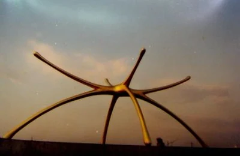

家具デザイン 4
- 作品名
- 家具デザイン 4
- 制作年
- 1990
- サイズ
- 確認中
- 素材
- 確認中
画像の説明（画面から見て取れる内容であり、画家による説明ではありません）
画面の中央に金黄色の物体があり、中心から外へ数本の細長い脚が伸び、下へ曲がって地面に着いている。背景は灰青に橙を帯びた黄昏の空で、desk 1 と記されている。

画面の中央に金黄色の物体があり、中心から外へ数本の細長い脚が伸び、下へ曲がって地面に着いている。背景は灰青に橙を帯びた黄昏の空で、desk 1 と記されている。